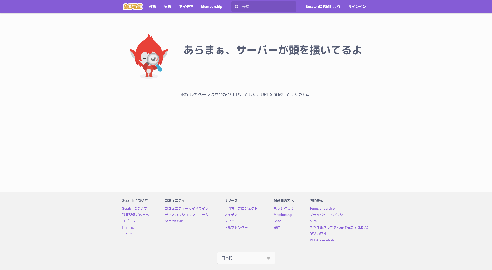

YUITO8-22
YUITO8-22
home
ホーム
help
ご利用について
list
スタジオ一覧
check
ガイドライン
movie
動画集
block
してはいけないこと
smartphone
QRコードを表示
account_circle
YUITO8-22 on Scratch
edit
Note
games
UnityRoom
menu
Scratchでしてはいけないこと
Scratchにはいくつかしてはいけないことがあります。それをまとめました。
使ってはいけない素材を使う
Scratchでは、「中を見る」で、使用されているスプライトや素材などを誰でもダウンロードできます。実はそれが、使ってはいけない理由につながるのです。これは再配布に該当します。
多くの「使ってはいけない素材サイト」は、再配布を禁止しています。
そのため、Scratchだと、再配布したのと同じ扱いになってしまい、ルール違反になるということです。これは回避することができません。なぜなら、Scratchで共有した時点で、再配布したのと同じだからです。
報告乱用
報告乱用は、プロジェクトを強制的に非公開にする悪質な行為です。これは、虚偽の報告をしてScratchチームを騙して削除させる行為です。特に傾向入りだと傾向には残ってるのにアクセスできないという状況になってしまいます。

プロジェクトが存在しないときに出る、エラーメッセージ
報告乱用されたら、傾向に乗っていてそれにアクセスしようとしても、上のような画面になってしまいます。私もこれに何度か遭遇しました。このような現象は再共有した場合も起こることがあります。これは報告乱用ほど悪質ではありませんが、良いといはいえません。傾向に乗っている場合、再共有は避けましょう。
リンク一覧
クリックしてそのページに飛びます。
Scratch
Note